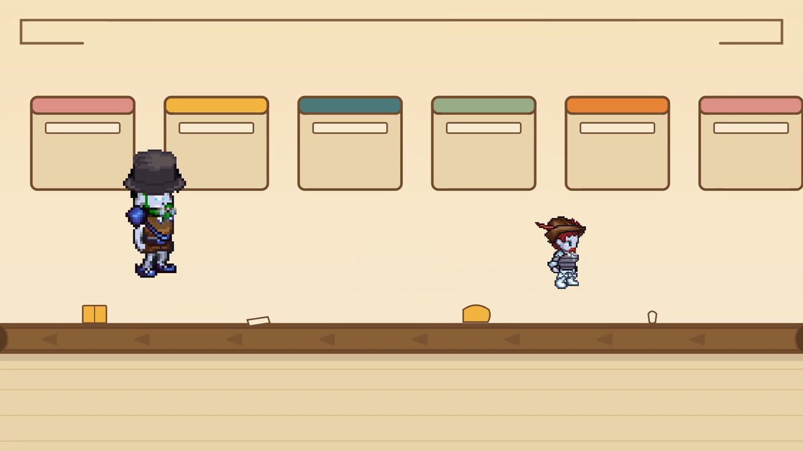

Veo, veo con Mira y Plumín
Un juego de imágenes gratis para niños de 4 a 8 años. Lee cada pista en voz alta. Tu niño toca la cosa en el dibujo o elige su nombre en la lista.
Sin reloj, sin puntos, sin registro. No se guarda nada.

La Sala de Clasificación
Pista:
O elige una:
🎉 ¡Viste muchas cosas pequeñas!
A Mira y al Sr. Plumín también les gusta fijarse en las cosas pequeñas. Vean su cuento juntos.
▶ Ver «El Naturalista Nos Visita»“El Naturalista Nos Visita”, de luiscper-cartoons. De 4 a 8 años. Pixel art: biblioteca LPC Universal Sprite, CC-BY-SA (créditos de los artistas).